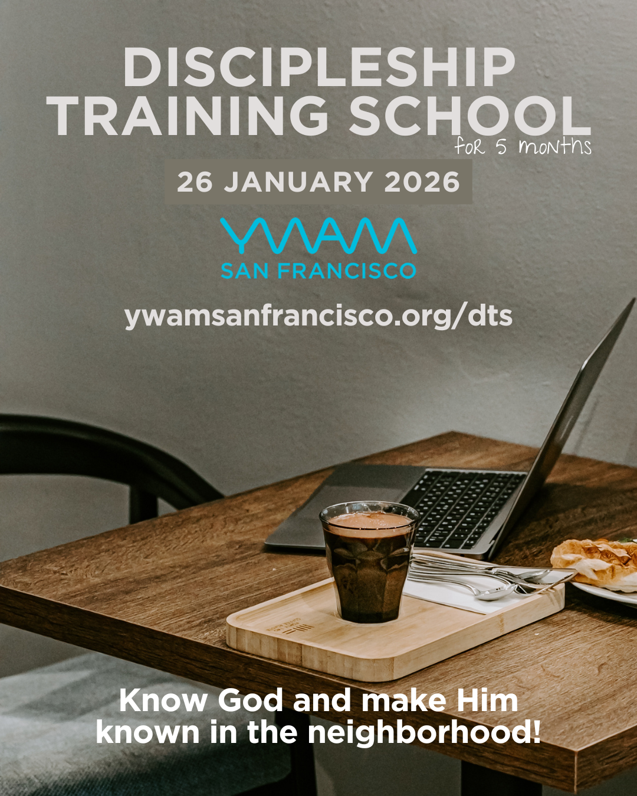
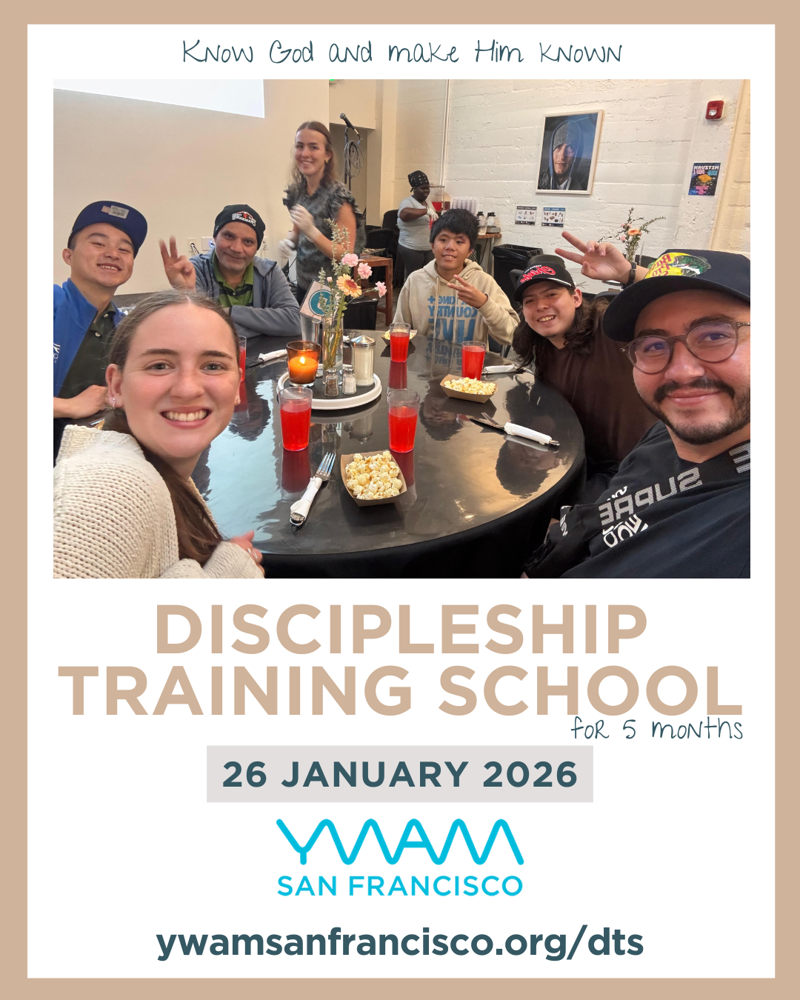
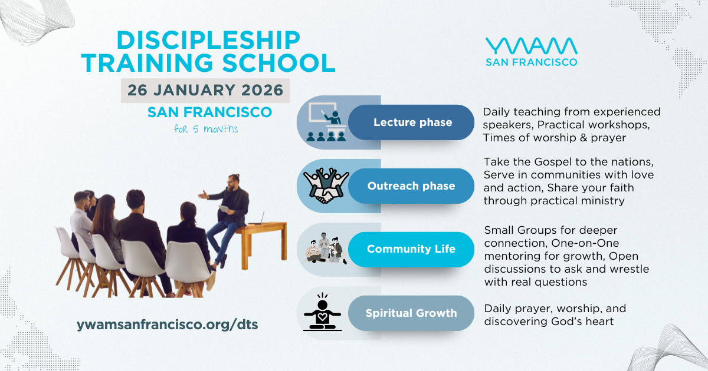
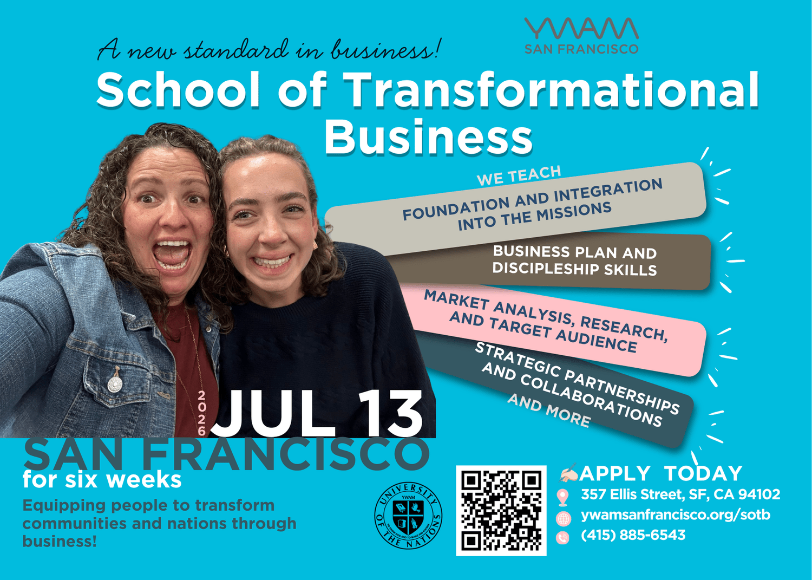
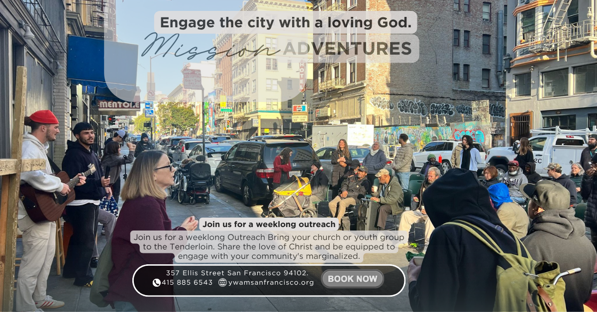

Stories from the street.
News, reflections and stories from life on Ellis Street.

Why a Discipleship Training School Can Change Your Life?
More than a school, DTS is a journey of knowing God, growing in faith, serving others, and discovering your purpose in God's mission.

Step into your calling
Be trained. Be transformed. Be sent. DTS starting January 18 is your chance to live out your faith and impact the world around you.

Church on the Street
Our Mission Adventure Program is designed for those who want to step out of the ordinary and into a life that truly makes a difference

Keeping the Lights On – 'After Hours' in the Ellis Room
When it rains in the Tenderloin, the Ellis Room barely closes. The lights stay on and the mission carries late into the night. People with nowhere else to go come in…

Where Faith meets the Marketplace
The SOTB exists to train faith-driven leaders to bring transformation to the marketplace, where profit and purpose meet.

Church That Shows Up
Every Sunday morning, church shows up right outside our community center. What begins with hot chocolate and cookies often turns into worship, a simple message, and…

Feeding Our City with Hope
Every week in San Francisco, more than 300 people line up not just for groceries, but for hope. At the YWAM San Francisco Food Pantry, neighbors are met with fresh food,…

Hot Chocolate, A Simple Ministry Making a Real Impact in San Francisco
On the streets of San Francisco, something simple is making a real impact. At YWAM San Francisco, our Hot Chocolate Ministry uses a warm drink to build connection,…

The Harvest is plentiful
DTS is not just a program; it is a season of transformation where Jesus shapes your heart, deepens your identity, strengthens your faith, and equips you to go wherever…

Discover God’s Heart
Discover God’s Heart in the City. The Journey of a Discipleship Training School (DTS) in San Francisco

God's heart in the Marketplace
Discover how to use your entrepreneurial gifts to advance the Kingdom of God in every sphere of society.

Urban DTS
The next DTS (Discipleship Training School) in San Francisco will equip you to embrace urban ministry. This program is crafted to be a transformative journey. Where…

The Great Commission
Business can be more than profit. It can bring hope, justice, and lasting transformation. This school will help you align your business calling with God’s mission. Let…

The next DTS
DTS is more than just a school; it's a call to transformation. If you're ready to step out in faith, grow closer to God, and engage in His mission, this DTS is for you.…

School of Transformational Business (SOTB)
Transforming communities and nations through business. Join us as we pioneer businesses that bring hope, dignity, and transformation to communities and nations!

A Safe Haven in the Heart of the Tenderloin. Life in the Ellis Room!
It’s also a place where God’s love is expressed in simple ways every day. A shared laugh over a puzzle. A word of encouragement during a game of chess. A prayer is…

A Life Changing journey for the next generation!
San Francisco is one of the most diverse, challenging, and spiritually hungry cities in the world. It's a place where faith meets reality.

Is God Calling You Deeper?
The Discipleship Training School at YWAM San Francisco offers a unique opportunity for spiritual growth and self-discovery.